HourNote · Apple Shortcuts
Automatically track app usage
Create two personal automations for every app you want to track: one starts the record when the app opens, and the other ends it when the app closes.
Before you begin
- Open HourNote once so its actions are registered with Shortcuts.
- Keep HourNote installed while using these automations.
- Use a separate opening and closing automation for each tracked app.
Set up the opening automation
- Create an App automation.Open Shortcuts → Automation, tap +, then choose App.
- Choose the trigger.Select the app to track, select only Is Opened, choose Run Immediately, and turn off Notify When Run if you do not want a notification each time.
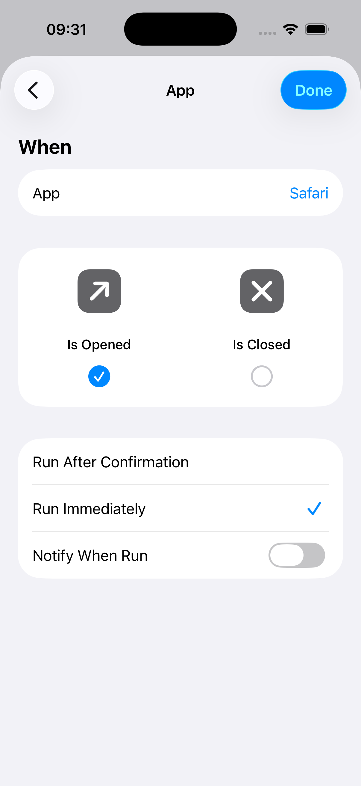
Example trigger for Safari. For the second automation, select Is Closed instead. - Open the action editor.Tap Next, then tap the gray Create New Shortcut tile. Do not search for HourNote on the first suggestion screen.
- Find the HourNote actions.In the new shortcut editor, tap Search Actions, enter HourNote, and choose Start App Tracking.
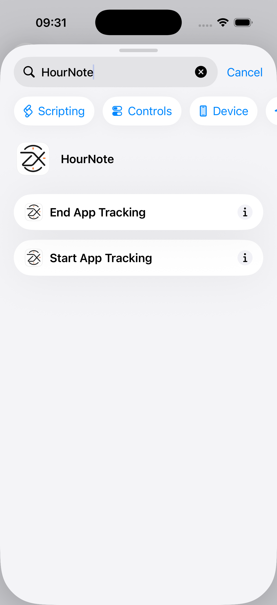
Both HourNote actions appear in the shortcut editor. - Name the app record.Enter a clear App Name, such as Safari. Turn off Show When Run, then finish the shortcut.
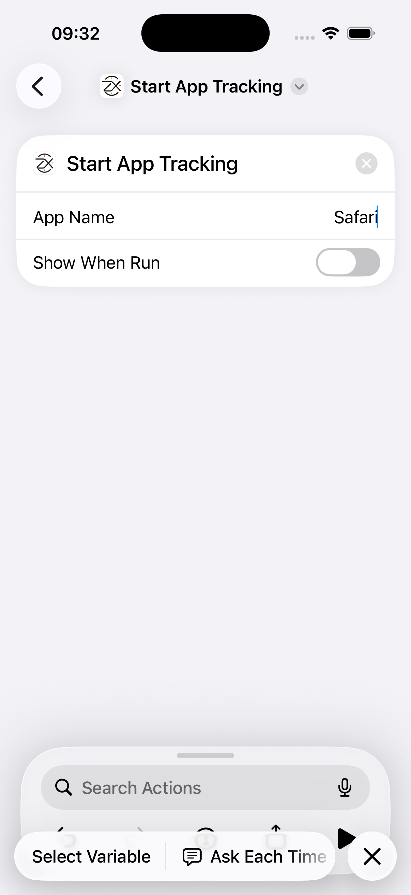
The text you enter becomes the name shown in HourNote.
Set up the closing automation
- Create another App automation for the same app, but select only Is Closed and choose Run Immediately.
- Tap Next → Create New Shortcut, search for HourNote, and choose End App Tracking. It needs no app-name parameter.
- Turn off Show When Run and finish. Your Automation list should now contain one opening row and one closing row.
Test it
Open the tracked app, use it longer than HourNote’s minimum app-tracking duration, then close or leave it. Open HourNote and check the calendar for the completed record.
If it does not work
- HourNote actions are missing: open HourNote once, fully close Shortcuts, reopen it, and search from inside Create New Shortcut.
- A record never starts: make sure the opening automation uses Run Immediately and that App Name is not empty.
- A record never ends: confirm there is a second automation using Is Closed and End App Tracking.
- Short uses are absent: Settings → Tracking contains a minimum-duration filter. Use the app longer than that value while testing.
HourNote receives only the name you enter and the automation timestamps. These actions do not read the tracked app’s screen or content.
HourNote · Apple 快捷指令
自动追踪 App 使用时间
每个要追踪的 App 都需要两条个人自动化：打开 App 时开始记录，关闭 App 时结束记录。
开始前
- 先打开一次 HourNote，让系统向“快捷指令”注册动作。
- 使用自动化期间不要卸载 HourNote。
- 每个 App 的“打开”和“关闭”必须分别建立两条自动化。
设置“打开 App”自动化
- 新建 App 自动化。打开快捷指令 → 自动化，点右上角 +，选择 App。
- 选择触发条件。选中要追踪的 App，只勾选“已打开”，选择“立即运行”；不想每次弹通知时，关闭“运行时通知”。
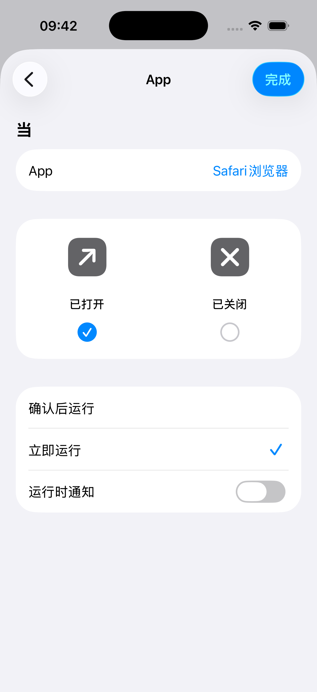
以 Safari 为例；第二条自动化要改选“已关闭”。 - 进入动作编辑器。点“下一步”，然后点灰色的“新建快捷指令”卡片。不要在最初的建议页面直接搜索 HourNote。
- 找到 HourNote 动作。进入新的快捷指令编辑器后，点“搜索操作”，输入 HourNote，选择“开始 App 追踪”。
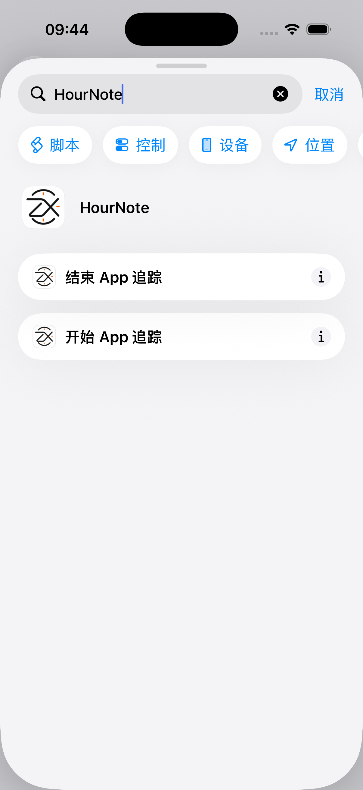
正确进入编辑器后会看到 HourNote 的两个动作。 - 填写记录名称。在“App 名称”中填写清晰名称，例如 Safari。关闭“运行时显示”，然后完成快捷指令。
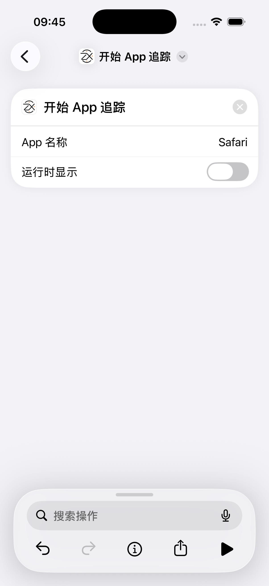
这里填写的文字会成为 HourNote 中显示的记录名称。
设置“关闭 App”自动化
- 为同一个 App 再建一条 App 自动化，这次只勾选“已关闭”，并选择“立即运行”。
- 点“下一步 → 新建快捷指令”，搜索 HourNote，选择“结束 App 追踪”。这个动作不需要填写 App 名称。
- 关闭“运行时显示”并完成。自动化列表中应该同时出现一条“打开”和一条“关闭”。
测试是否成功
打开被追踪的 App，使用时间超过 HourNote 设置中的最短 App 追踪时长，然后关闭或离开该 App。再打开 HourNote，在日历中检查是否生成了完整记录。
仍然无法使用
- 搜不到 HourNote 动作：先打开一次 HourNote，彻底关闭“快捷指令”后重新打开，并确认是在“新建快捷指令”编辑器里搜索。
- 记录没有开始：确认“打开”自动化是“立即运行”，且“App 名称”没有留空。
- 记录没有结束：确认另有一条“已关闭”＋“结束 App 追踪”自动化。
- 很短的使用没有记录：“设置 → 追踪设置”中有最短时长过滤；测试时请使用超过该时长。
HourNote 只接收你填写的名称和自动化触发时间，不会读取被追踪 App 的屏幕或内容。
HourNote · Apple 捷徑
自動追蹤 App 使用時間
每個要追蹤的 App 都需要兩個個人自動化：開啟 App 時開始記錄，關閉 App 時結束記錄。
開始前
- 先開啟一次 HourNote，讓系統向「捷徑」註冊動作。
- 使用自動化期間請保留 HourNote。
- 每個 App 的「開啟」與「關閉」必須分別建立自動化。
設定「開啟 App」自動化
- 新增 App 自動化。開啟捷徑 → 自動化，點右上角 +，選擇 App。
- 選擇觸發條件。選擇要追蹤的 App，只勾選「已開啟」，選擇「立即執行」；若不想每次顯示通知，請關閉「執行時通知」。
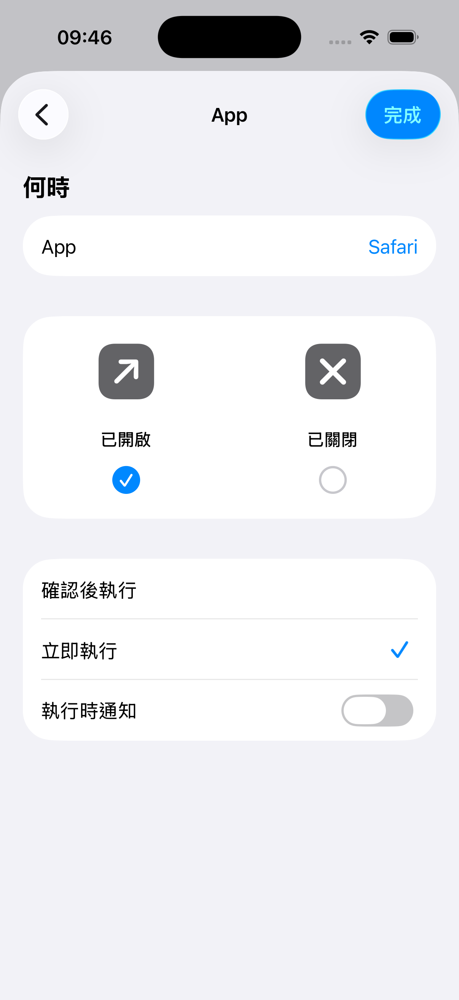
以 Safari 為例；第二個自動化要改選「已關閉」。 - 進入動作編輯器。點「下一步」，再點灰色的「新增捷徑」卡片。不要在最初的建議畫面直接搜尋 HourNote。
- 找到 HourNote 動作。在新捷徑編輯器點「搜尋動作」，輸入 HourNote，選擇「開始 App 追蹤」。
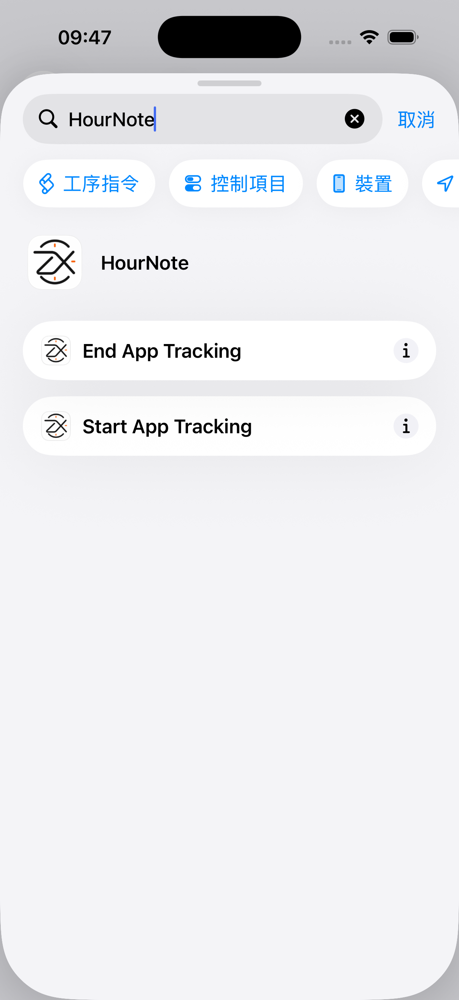
正確進入編輯器後會看到 HourNote 的兩個動作。 - 填寫記錄名稱。在「App 名稱」輸入清楚的名稱，例如 Safari。關閉「執行時顯示」，再完成捷徑。
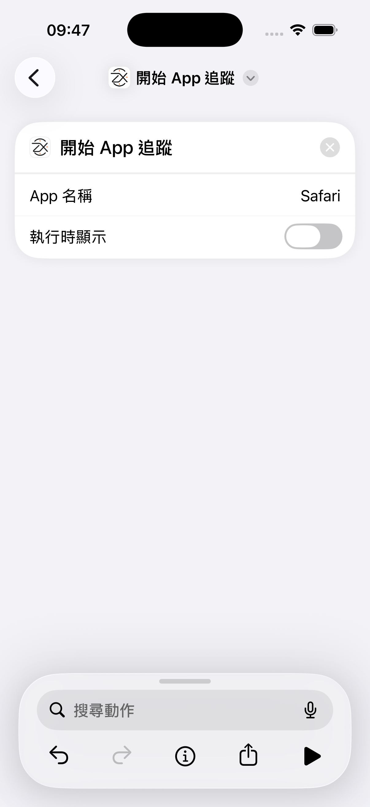
這裡輸入的文字會成為 HourNote 中顯示的記錄名稱。
設定「關閉 App」自動化
- 為同一個 App 再建一個 App 自動化，這次只勾選「已關閉」，並選擇「立即執行」。
- 點「下一步 → 新增捷徑」，搜尋 HourNote，選擇「結束 App 追蹤」；這個動作不需要 App 名稱。
- 關閉「執行時顯示」並完成。自動化列表中應同時有一個「開啟」和一個「關閉」。
測試是否成功
開啟被追蹤的 App，使用時間超過 HourNote 設定中的最短 App 追蹤時間，然後關閉或離開該 App。回到 HourNote，在日曆檢查完整記錄。
仍然無法使用
- 找不到 HourNote 動作：先開啟一次 HourNote，完全關閉「捷徑」後重新開啟，並在「新增捷徑」編輯器中搜尋。
- 記錄沒有開始：確認「開啟」自動化使用「立即執行」，且「App 名稱」不是空白。
- 記錄沒有結束：確認另有一個「已關閉」＋「結束 App 追蹤」自動化。
- 很短的使用沒有記錄：「設定 → 追蹤設定」有最短時間過濾；測試時請使用超過該時間。
HourNote 只會收到你輸入的名稱與自動化觸發時間，不會讀取被追蹤 App 的畫面或內容。
HourNote · Appleショートカット
Appの使用時間を自動で記録する
記録するAppごとに、Appを開いたときに記録を開始するオートメーションと、閉じたときに終了するオートメーションの2つを作成します。
始める前に
- HourNoteを一度開き、アクションをショートカットに登録します。
- オートメーションを使用する間はHourNoteを削除しないでください。
- 各Appに「開く」と「閉じる」の2つのオートメーションが必要です。
「Appを開く」オートメーション
- Appオートメーションを作成します。ショートカット → オートメーションを開き、右上の＋、Appの順にタップします。
- 条件を選びます。記録するAppを選び、「開いている」だけを選択して「すぐに実行」を選びます。毎回の通知が不要なら「実行時に通知」をオフにします。
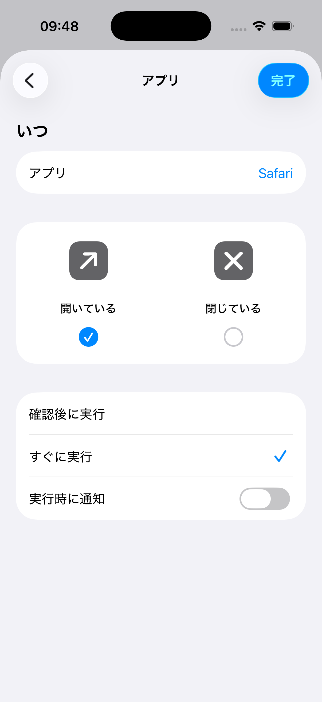
Safariの例です。2つ目のオートメーションでは「閉じている」を選びます。 - アクション編集画面を開きます。「次へ」をタップし、灰色の「新規ショートカット」タイルをタップします。最初の候補画面ではHourNoteを検索しません。
- HourNoteのアクションを探します。新しいショートカットで「アクションを検索」をタップし、HourNoteと入力して「Appの使用記録を開始」を選びます。
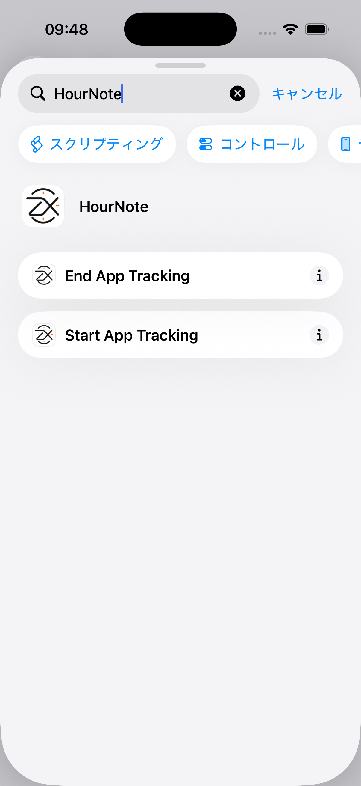
ショートカット編集画面ではHourNoteの2つのアクションが表示されます。 - 記録名を入力します。「App名」にSafariなどの分かりやすい名前を入力し、「実行時に表示」をオフにして完了します。
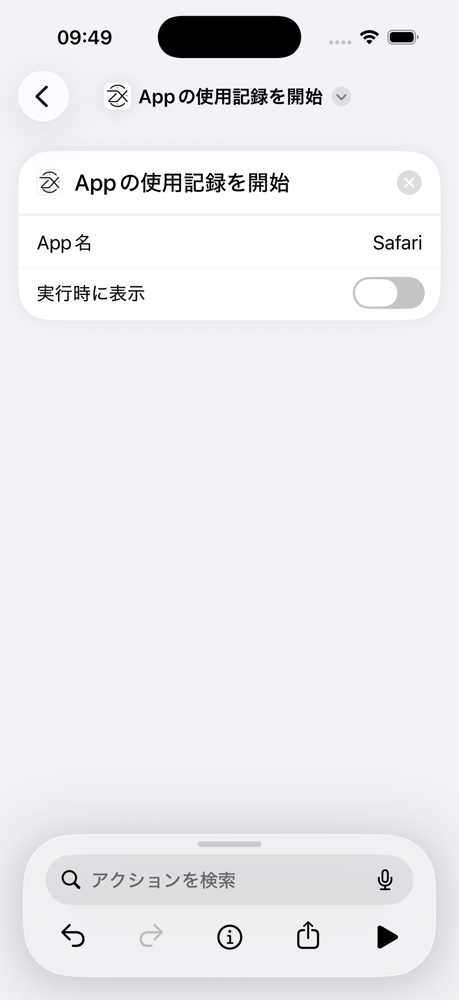
入力した文字がHourNote内の記録名になります。
「Appを閉じる」オートメーション
- 同じAppでもう1つ作成し、今度は「閉じている」だけと「すぐに実行」を選びます。
- 「次へ → 新規ショートカット」を開き、HourNoteを検索して「Appの使用記録を終了」を選びます。App名の入力は不要です。
- 「実行時に表示」をオフにして完了します。オートメーション一覧に「開く」と「閉じる」の2行があれば正しく設定されています。
テスト
対象のAppを開き、HourNoteで設定した最短記録時間より長く使用してから閉じるか別のAppへ移動します。HourNoteのカレンダーで完了した記録を確認します。
動作しない場合
- HourNoteが見つからない：HourNoteを一度開き、ショートカットAppを完全に終了して再度開き、「新規ショートカット」内で検索します。
- 開始されない：「開く」側が「すぐに実行」で、App名が空欄でないことを確認します。
- 終了されない：「閉じている」＋「Appの使用記録を終了」の別のオートメーションを確認します。
- 短い利用が記録されない：「設定 → トラッキング設定」の最短時間より長く使用してテストします。
HourNoteが受け取るのは、入力した名前とオートメーションの時刻だけです。対象Appの画面や内容は読み取りません。
HourNote · Atajos de Apple
Registrar automáticamente el uso de apps
Crea dos automatizaciones personales por cada app: una inicia el registro al abrirla y la otra lo termina al cerrarla.
Antes de empezar
- Abre HourNote una vez para registrar sus acciones en Atajos.
- Mantén HourNote instalado mientras uses las automatizaciones.
- Cada app necesita una automatización de apertura y otra de cierre.
Automatización al abrir la app
- Crea una automatización App.Abre Atajos → Automatización, toca + y elige App.
- Elige la condición.Selecciona la app, marca solo Se abre, elige Ejecutar inmediatamente y desactiva Notificar cuando se ejecute si no quieres avisos.
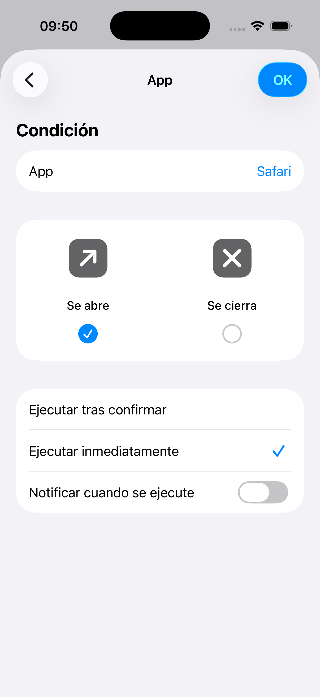
Ejemplo con Safari. En la segunda automatización selecciona Se cierra. - Abre el editor de acciones.Toca Siguiente y después el mosaico gris Nuevo atajo. No busques HourNote en la primera pantalla de sugerencias.
- Busca las acciones de HourNote.En el editor, toca Buscar acciones, escribe HourNote y elige Iniciar seguimiento de app.
Las dos acciones de HourNote aparecen dentro del editor. - Escribe el nombre del registro.Introduce un Nombre de la app claro, por ejemplo Safari. Desactiva Mostrar al ejecutar y finaliza el atajo.
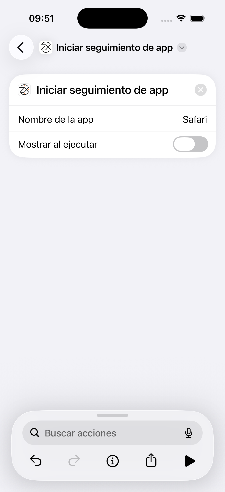
El texto introducido será el nombre que se muestre en HourNote.
Automatización al cerrar la app
- Crea otra automatización para la misma app, marca solo Se cierra y elige Ejecutar inmediatamente.
- Toca Siguiente → Nuevo atajo, busca HourNote y elige Finalizar seguimiento de app. No requiere el nombre de la app.
- Desactiva Mostrar al ejecutar y termina. La lista debe contener una fila de apertura y otra de cierre.
Prueba
Abre la app, úsala durante más tiempo que la duración mínima configurada en HourNote y ciérrala o sal de ella. Comprueba el registro completo en el calendario de HourNote.
Si no funciona
- No aparecen las acciones: abre HourNote una vez, cierra Atajos por completo, vuelve a abrirlo y busca dentro de Nuevo atajo.
- El registro no empieza: confirma que la automatización de apertura usa Ejecutar inmediatamente y que el nombre no está vacío.
- El registro no termina: confirma que existe otra automatización con Se cierra y Finalizar seguimiento de app.
- No aparecen usos breves: prueba durante más tiempo que el mínimo de Ajustes → Seguimiento.
HourNote solo recibe el nombre que introduces y las horas de las automatizaciones. No lee la pantalla ni el contenido de la app seguida.
HourNote · Apple Kurzbefehle
App-Nutzung automatisch erfassen
Erstelle für jede App zwei persönliche Automationen: Eine startet die Aufzeichnung beim Öffnen, die andere beendet sie beim Schließen.
Vorbereitung
- Öffne HourNote einmal, damit seine Aktionen in Kurzbefehle registriert werden.
- Lass HourNote installiert, solange du die Automationen verwendest.
- Jede App benötigt getrennte Automationen für Öffnen und Schließen.
Automation beim Öffnen
- App-Automation erstellen.Öffne Kurzbefehle → Automation, tippe auf + und wähle App.
- Auslöser wählen.Wähle die App, aktiviere nur geöffnet wird und wähle Sofort ausführen. Deaktiviere Bei Ausführung benachrichtigen, wenn du keine Meldung möchtest.
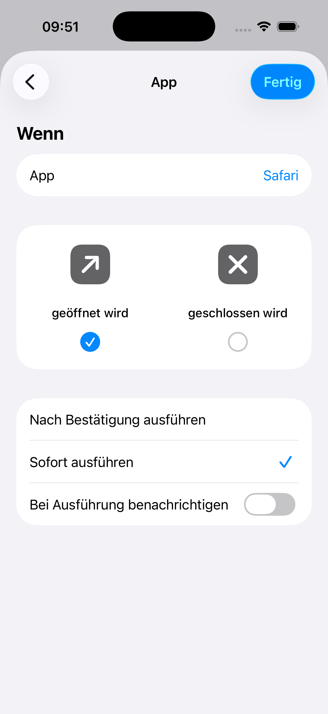
Beispiel mit Safari. Für die zweite Automation wird geschlossen wird gewählt. - Aktionseditor öffnen.Tippe auf Weiter und dann auf die graue Kachel Neuer Kurzbefehl. Suche nicht bereits auf der ersten Vorschlagsseite nach HourNote.
- HourNote-Aktionen finden.Tippe im neuen Editor auf Aktionen suchen, gib HourNote ein und wähle App-Nutzung starten.
Im Kurzbefehl-Editor erscheinen beide HourNote-Aktionen. - Aufzeichnung benennen.Gib einen eindeutigen App-Namen ein, zum Beispiel Safari. Deaktiviere Beim Ausführen anzeigen und schließe den Kurzbefehl ab.
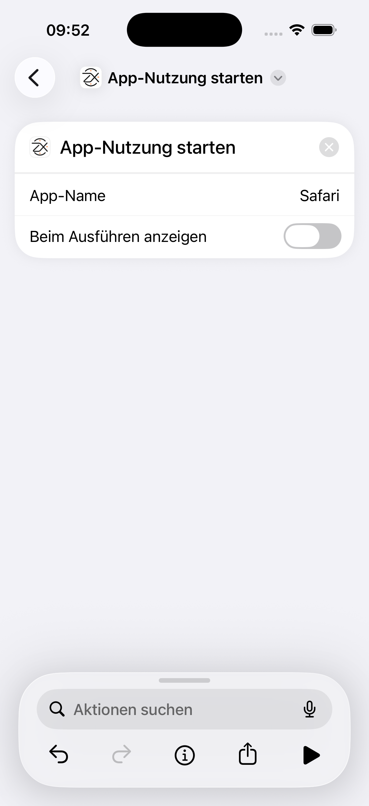
Dieser Text wird in HourNote als Name der Aufzeichnung angezeigt.
Automation beim Schließen
- Erstelle für dieselbe App eine zweite Automation, aktiviere nur geschlossen wird und wähle Sofort ausführen.
- Tippe auf Weiter → Neuer Kurzbefehl, suche HourNote und wähle App-Nutzung beenden. Dafür ist kein App-Name erforderlich.
- Deaktiviere Beim Ausführen anzeigen und schließe ab. In der Liste müssen je eine Zeile für Öffnen und Schließen stehen.
Test
Öffne die App, verwende sie länger als die in HourNote eingestellte Mindestdauer und schließe oder verlasse sie. Prüfe anschließend den vollständigen Eintrag im HourNote-Kalender.
Wenn es nicht funktioniert
- HourNote-Aktionen fehlen: Öffne HourNote einmal, beende Kurzbefehle vollständig, öffne es erneut und suche innerhalb von Neuer Kurzbefehl.
- Aufzeichnung startet nicht: Prüfe Sofort ausführen und einen nicht leeren App-Namen.
- Aufzeichnung endet nicht: Prüfe die zweite Automation mit geschlossen wird und App-Nutzung beenden.
- Kurze Nutzung fehlt: Teste länger als die Mindestdauer unter Einstellungen → Tracking.
HourNote erhält nur den eingegebenen Namen und die Zeitpunkte der Automation. Bildschirm und Inhalte der erfassten App werden nicht gelesen.